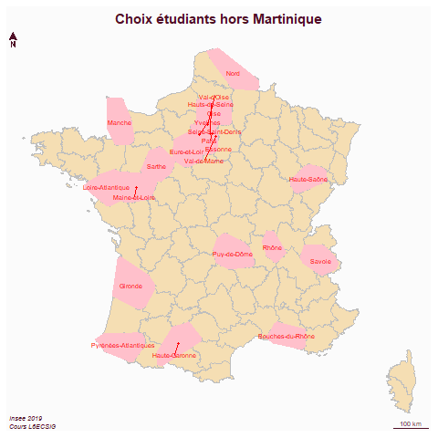

| num | date | détail.prévu | exercice.pts |
|---|---|---|---|
| TD1 | 29.01.26 | Recherches de données | 3 |
| TD2 | 05.02.26 | Géoréférencement | 1 |
| TD3 | 12.02.26 | Traitements vectoriels | 2 |
| TD4 | 19.02.26 | traitements rasters | 1 |
| TD5 | 26.02.26 | MNS et MNT | 1 |
| TD6 | 12.03.26 | Jointures attributaires et spatiales | 2 |
| TD7 | 19.03.26 | Réseaux | NA |
| TD8 | 26.03.26 | Markdown + structure projet ET objets dans R : vecteurs et dataframe | NA |
| TD9 | 02.04.26 | intégrer des données spatiales : format gpkg | NA |
| TD10 | 09.04.26 | oral de présentation des projets (5 mn par groupe) + Géotraitement | NA |
| TD11 | 07.05.26 | Rendu de projet (aucun retard toléré) + révisions partiel | NA |
Introduction
Objet
L6ECSIG Construction et utilisation des SIG 2025/26
(Gr. 6 et , Jeudi 16h30 - 19h30 Salle 217 sur le campus de Clignancourt)
L’idée du cours est de consolider les acquis de la L2 et de familiariser les étudiants à Arcgis pro et au codage avec R (une plateforme de versioning très utilisée.)
La thématique utilisée est Commune pauvre et/ou riche ?
Données
limites communes dans OSM
carreaux filosofi 200 m (données infra communales)
données ofgl (données communales)
Déroulé
Evaluation
régime du contrôle continu,
Deux notes :
une partiel
une note maison (+ les exercices pour moitié de la note maison)
Le partiel sera sur machine d’une durée de 1h30 : - un exercice sous Arcgis Pro (10 pt) - et un autre sous R(10 pt) (avec un rendu en .pdf)
Barème du projet (sur 10 points)
Merci de déposer votre lien vers votre site web à avant le 19 avril (voir le moodle)
Tous les étudiants remplissent le moodle et consignent prénom / nom du groupe / lien
1 pt lien valide site web au 19 avril
2 pt sur la donnée (sa description)
2 pt sur la problématique (présentée le 9 avril mais modifiée en fonction des observations, ne pas oublier de faire une introduction et une conclusion)
2 pt sur les GT vecteurs (avec schéma de géotraitement obligatoire)
2 pt sur les GT Rasters (idem)
1 pt sur les jointures
La correction sera déposée avec le détail des points sur le moodle.
Données
Il s’agit de vos données pour la commune choisie. Principalement :
OFGL
Filosofi
communes choisies
42 communes + Bondy
Récupération des carreaux 200 m pour les communes
Attention au 97, il faut prendre un autre fichier filosofi
Cartographie

Ressources
Le cours que vous n’avez pas eu
Données communales